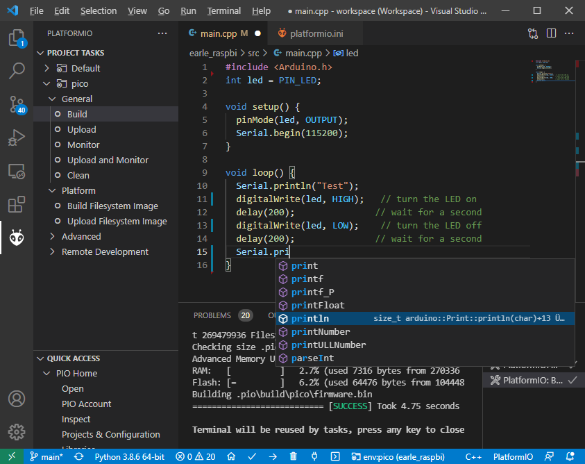

Using this core with PlatformIO¶
What is PlatformIO?¶
PlatformIO is a free, open-source build-tool written in Python, which also integrates into VSCode code as an extension.
PlatformIO significantly simplifies writing embedded software by offering a unified build system, yet being able to create project files for many different IDEs, including VSCode, Eclipse, CLion, etc. Through this, PlatformIO can offer extensive features such as IntelliSense (autocomplete), debugging, unit testing etc., which not available in the standard Arduino IDE.
The Arduino IDE experience:

The PlatformIO experience:
Refer to the general documentation at https://docs.platformio.org/.
Especially useful is the Getting started with VSCode + PlatformIO page.
Hereafter it is assumed that you have a basic understanding of PlatformIO in regards to project creation, project file structure and building and uploading PlatformIO projects, through reading the above pages.
Current state of development¶
At the time of writing, PlatformIO integration for this core is a work-in-progress and not yet merged into mainline PlatformIO. This is subject to change soon.
If you want to use the PlatformIO integration right now, make sure you first create a standard Raspberry Pi Pico + Arduino project within PlatformIO.
This will give you a project with the platformio.ini
[env:pico]
platform = raspberrypi
board = pico
framework = arduino
Here, you need to change the platform to take advantage of the features described hereunder. You also need to inject two PlatformIO packages, one for the compiler toolchain and one for the Arduino core package.
[env:pico]
platform = https://github.com/maxgerhardt/platform-raspberrypi.git
board = pico
framework = arduino
; note that download link for toolchain is specific for OS. see https://github.com/earlephilhower/pico-quick-toolchain/releases.
platform_packages =
maxgerhardt/framework-arduinopico@https://github.com/earlephilhower/arduino-pico.git
maxgerhardt/toolchain-pico@https://github.com/earlephilhower/pico-quick-toolchain/releases/download/1.3.1-a/x86_64-w64-mingw32.arm-none-eabi-7855b0c.210706.zip
When the support for this core has been merged into mainline PlatformIO, this notice will be removed and a standard platformio.ini as shown above will work as a base.
Selecting the new core¶
Prerequisite for using this core is to tell PlatformIO to switch to it.
There will be board definition files where the Earle-Philhower core will
be the default since it’s a board that only exists in this core (and not
the other https://github.com/arduino/ArduinoCore-mbed). To switch boards
for which this is not the default core (e.g. the standard
board = pico), the directive
board_build.core = earlephilhower
must be added to the platformio.ini. This controls the core
switching
logic.
Flash size¶
Controlled via specifying the size allocated for the filesystem.
Available sketch size is calculated accordingly by using (as in
makeboards.py) that number and the (constant) EEPROM size (4096
bytes) and the total flash size as known to PlatformIO via the board
definition file. The expression on the right can involve “b”,”k”,”m”
(bytes/kilobytes/megabytes) and floating point numbers. This makes it
actually more flexible than in the Arduino IDE where there is a finite
list of choices. Calculations happen in the
platform.
; in reference to a board = pico config (2MB flash)
; Flash Size: 2MB (Sketch: 1MB, FS:1MB)
board_build.filesystem_size = 1m
; Flash Size: 2MB (No FS)
board_build.filesystem_size = 0m
; Flash Size: 2MB (Sketch: 0.5MB, FS:1.5MB)
board_build.filesystem_size = 1.5m
CPU Speed¶
As for all other PlatformIO platforms, the f_cpu macro value (which
is passed to the core) can be changed as
documented
; 133MHz
board_build.f_cpu = 133000000L
Debug Port¶
Via build_flags as done for many other cores (example).
; Debug Port: Serial
build_flags = -DDEBUG_RP2040_PORT=Serial
; Debug Port: Serial 1
build_flags = -DDEBUG_RP2040_PORT=Serial1
; Debug Port: Serial 2
build_flags = -DDEBUG_RP2040_PORT=Serial2
Debug Level¶
Done again by directly adding the needed build flags. When wanting to define multiple build flags, they must be accumulated in either a sing line or a newline-separated expression.
; Debug level: Core
build_flags = -DDEBUG_RP2040_CORE
; Debug level: SPI
build_flags = -DDEBUG_RP2040_SPI
; Debug level: Wire
build_flags = -DDEBUG_RP2040_WIRE
; Debug level: All
build_flags = -DDEBUG_RP2040_WIRE -DDEBUG_RP2040_SPI -DDEBUG_RP2040_CORE
; Debug level: NDEBUG
build_flags = -DNDEBUG
; example: Debug port on serial 2 and all debug output
build_flags = -DDEBUG_RP2040_WIRE -DDEBUG_RP2040_SPI -DDEBUG_RP2040_CORE -DDEBUG_RP2040_PORT=Serial2
; equivalent to above
build_flags =
-DDEBUG_RP2040_WIRE
-DDEBUG_RP2040_SPI
-DDEBUG_RP2040_CORE
-DDEBUG_RP2040_PORT=Serial2
USB Stack¶
Not specifying any special build flags regarding this gives one the default Pico SDK USB stack. To change it, add
; Adafruit TinyUSB
build_flags = -DUSE_TINYUSB
; No USB stack
build_flags = -DPIO_FRAMEWORK_ARDUINO_NO_USB
Note that the special “No USB” setting is also supported, through the
shortcut-define PIO_FRAMEWORK_ARDUINO_NO_USB.
Selecting a different core version¶
If you wish to use a different version of the core, e.g., the latest git
master version, you can use a
platform_packages
directive to do so. Simply specify that the framework package
(framework-arduinopico) comes from a different source.
platform_packages =
framework-arduinopico@https://github.com/earlephilhower/arduino-pico.git#master
Whereas the #master can also be replaced by a #branchname or a
#commithash. If left out, it will pull the default branch, which is master.
The file:// pseudo-protocol can also be used instead of https:// to point to a
local copy of the core (with e.g. some modifications) on disk.
Note that this can only be done for versions that have the PlatformIO builder script it in, so versions before 1.9.2 are not supported.
Examples¶
The following example platformio.ini can be used for a Raspberry Pi Pico
and 0.5MByte filesystem.
[env:pico]
platform = https://github.com/maxgerhardt/platform-raspberrypi.git
board = pico
framework = arduino
build_board.core = earlephilhower
board_build.filesystem_size = 0.5m
; note that download link for toolchain is specific for OS. see https://github.com/earlephilhower/pico-quick-toolchain/releases.
platform_packages =
maxgerhardt/framework-arduinopico@https://github.com/earlephilhower/arduino-pico.git
maxgerhardt/toolchain-pico@https://github.com/earlephilhower/pico-quick-toolchain/releases/download/1.3.1-a/x86_64-w64-mingw32.arm-none-eabi-7855b0c.210706.zip
The initial project structure should be generated just creating a new
project for the Pico and the Arduino framework, after which the
auto-generated platformio.ini can be adapted per above.